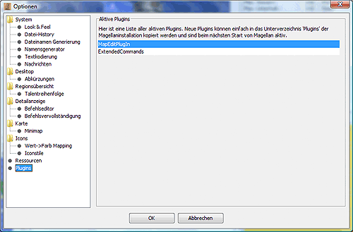

Plugins
Hier sieht man, welche Plugins Magellan erkannt hat und
gestartet hat.

In der aktuellen Installationsversion sind dies nur zwei
Plugins.
- MapEditPlugin
zum Bearbeiten der Karte (Hinzufügen, Entfernen von
Regionen)
- Extended
Commands
zum Script-basierten Erstellen von Befehlen (ähnlich
Vorlage)